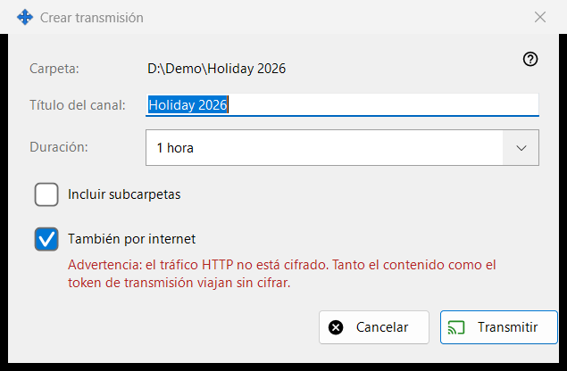
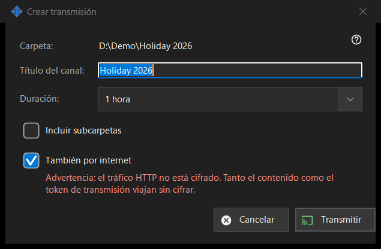

Crear transmisión
Para qué sirve
Configura una transmisión antes de crearla: su título, cuánto dura y si llega más allá de la red local. Se abre desde «Crear transmisión..» en la ventana de transmisiones para el archivo o la carpeta elegidos. No se crea ni se envía nada hasta que pulsas «Transmitir».


En este orden
- Comprueba la ruta de la primera línea (Carpeta: o Archivo:).
- Edita «Título del canal:»; empieza con el nombre de la carpeta o del archivo.
- Elige «Duración:».
- Para una carpeta, marca «Incluir subcarpetas» si las necesitas.
- Deja marcada o desmarca «También por internet».
- Pulsa «Transmitir» (Intro) o «Cancelar» (Esc).
Los elementos
Título y duración
El título del canal es lo que muestra la lista de transmisiones. La duración ofrece 24 horas (predeterminada), 1 hora, 7 días y «Hasta revocación», que no tiene fecha de fin y permanece hasta que la revoques en la ventana de transmisiones.
Incluir subcarpetas
Solo se muestra cuando el destino es una carpeta y está desactivada de forma predeterminada. Decide si se incluyen los archivos de las subcarpetas de la carpeta transmitida.
También por internet
Está marcada salvo que los ajustes de uso compartido limiten las exportaciones a la red local. Cuando está marcada, el enlace incluye también las direcciones de internet IPv6 y con puerto redirigido de este PC, si se conocen, junto a la local. Marcarla cambia la duración de 24 horas a 1 hora (puedes volver a cambiarla) y muestra una advertencia roja: el tráfico HTTP no está cifrado, así que el contenido y el token de la transmisión viajan sin cifrar. Cualquiera que tenga el enlace puede leer los archivos de la transmisión hasta que caduque o se revoque. Desmarca la casilla para mantener la transmisión dentro de la red local.
Transmitir y Cancelar
«Transmitir» solo devuelve tus elecciones a la ventana de transmisiones, que entonces crea la transmisión y copia su enlace. «Cancelar» cierra el cuadro y no crea nada.
Ajustes del gestor · Ajustes de uso compartido SFTP · Ajustes del servidor de intercambio